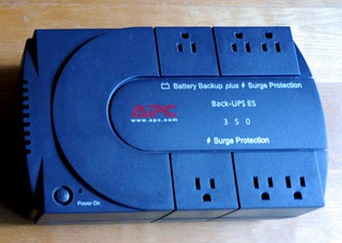

UNIT 1-2 P1-P17 40823152 <<
Previous Next >> 40923212
40923205
PCH 2 Procedures and Safety
This lesson covers the basic procedures and safety precautions with which technicians must be competent and comfortable before working on various PC hardware. First we will discuss the hazards of computer systems and tools, including electricity, electrostatic discharge (ESD), chemicals, and other dangers that can hurt you when you are working on the various forms of computer hardware. We will also cover the safety measures and procedures that you must employ to minimize risk, such as using ESD straps, ESD mats, self-grounding systems, and equipment grounding. We will then discuss personal safety, including removal of jewelry to protect yourself and computers, proper lifting techniques and weight limitations, and removal of electrical power. Finally, we will cover electrical fire safety, cathode ray tube (CRT) safety and disposal, cable management, and local government regulation compliance.
本課程涵蓋了基本程序和安全預防措施，技術人員在使用各種PC硬件之前必須具備一定的能力和舒適度。首先，我們將討論計算機系統和工具的危害，包括電，靜電釋放（ESD），化學物質以及在使用各種形式的計算機硬件時可能傷害您的其他危害。我們還將介紹必須使用的安全措施和規程，以最大程度地降低風險，例如使用ESD帶，ESD墊，自接地系統和設備接地。然後，我們將討論人身安全，包括為保護自己和計算機而移走珠寶，適當的舉陞技術和重量限制以及移去電源。最後，我們將介紹電氣消防安全。
Operational Procedures: Electrical Safety
Electricity is a significant hazard in working with computer systems and tools. Electricity is required to make workstations operate, but if you are not careful, electricity can cause serious injury to you and major damage to the computer you are working on.
With regard to human injury, technicians can receive an electrical shock from computers or electrical outlets if special care is not taken when working with them. It is important to check all the power outlets to ensure they are working properly. When checking the outlets, you should verify that the outlet is providing the correct amount of power. If you are working in the United States, then you should expect to receive a voltage of 115 VAC to 120 VAC (volts of alternating current) from the power outlets in an office or home. This can be verified using a simple three-prong tester, voltmeter, or multimeter. Procedurally, you must never pull the cords out by the wires, as this can cause damage and fraying of the cables. Instead, you should plug in and remove cables by the plug on the end of the cord. It is important that you never use a frayed or damaged power cable.
In addition to keeping themselves safe, technicians need to keep computers safe from electrical damage. It is common to use a surge protector to protect computers from power spikes or surges. A power strip is not the same thing as a surge protector. Surge protectors are rated in joules (J), a unit of energy. The rating indicates the number of joules the surge protector can absorb before failure. A higher rating indicates greater protection for the computer. Also, you must not overload the surge protectors, and must never daisy-chain them, or plug one surge protector into another: this causes higher amperage draws that can lead to fires.
電力是使用計算機系統和工具的重大危險。要使工作站正常工作，必須通電，但是如果不小心，電流可能會對您造成嚴重傷害，並嚴重損壞您正在使用的計算機。
關於人身傷害，如果在使用計算機或電源插座時未特別注意，則技術人員可能會從計算機或電源插座中遭受電擊。檢查所有電源插座以確保它們正常工作很重要。檢查插座時，應驗證插座是否提供了正確的電量。如果您在美國工作，則應該期望從辦公室或家庭的電源插座接收到115 VAC至120 VAC（交流電壓）的電壓。可以使用簡單的三叉測試儀，電壓表或萬用表進行驗證。程序上，切勿將電線從電線中拉出，因為這會導致電纜損壞和磨損。相反，您應該插入插頭並通過電源線末端的插頭拔出電纜。
除了保護自己的安全外，技術人員還需要保護計算機免受電氣損壞。通常使用電湧保護器來保護計算機免受電源尖峰或電湧的影響。配電盤與電湧保護器不是一回事。電湧保護器的額定功率單位為焦耳（J）。額定值表示電湧保護器在故障之前可以吸收的焦耳數。額定值越高，表示對計算機的保護越高。另外，您一定不能使電湧保護器過載，也不能以菊花鏈的方式將它們電擊，也不能將一個電湧保護器插入另一個電湧保護器：這會導致更高的安培數消耗，從而引發火災。
If continuous power to a workstation is necessary, you can use an uninterruptible power supply (UPS). A UPS should never be used for laser printers, as it draws too much power through the UPS and can cause damage to the printer.
如果需要為工作站持續供電，則可以使用不間斷電源（UPS）。切勿將UPS用於激光打印機，因為它會通過UPS消耗過多功率，並可能損壞打印機。
Power Supplies
Technicians should use surge protectors or surge suppressors to protect computers from power spikes and surges. These devices are specifically designed to absorb overvoltage conditions that would damage computers, printers, and monitors. While these devices will protect the computer from damage resulting from an overvoltage condition, they do not protect it from an undervoltage condition. Undervoltage is a condition that occurs when insufficient voltage is provided by the outlet to the computer. In situations where it is essential that the computer not lose power, technicians must install an uninterruptible power supply (UPS) to provide emergency power when a power failure (blackout) occurs or an undervoltage condition (brownout) occurs. The UPS runs the computer from its internal battery continuously and recharges the UPS’s battery while power is available. Once power is lost, the UPS continues to power the computer for up to 15 minutes (purportedly). This provides the user enough time to save work and safely power down the workstation. Another device that helps in undervoltage conditions is the standby power supply (SPS), which runs the computer directly from the wall outlet (AC power), but switches to the battery in less than a millisecond when a power outage occurs. An SPS device does not provide constant power, like a UPS device. For this reason, most technicians prefer UPS devices over SPS devices, so UPS devices are much more common in the marketplace.
技術人員應使用電湧保護器或電湧抑制器來保護計算機免受電湧和電湧的影響。這些設備經過專門設計，可以吸收可能損壞計算機，打印機和顯示器的過電壓情況。儘管這些設備可以保護計算機免受過壓狀況的損害，但它們不能保護計算機免受欠壓狀況的影響。當計算機的插座提供的電壓不足時，就會發生欠壓情況。在必須確保計算機不掉電的情況下，技術人員必須安裝不間斷電源（UPS），以在發生電源故障（停電）或發生欠壓情況（斷電）時提供應急電源。UPS會使用其內部電池連續運行計算機，並在有電時為UPS的電池充電。一旦斷電，UPS將繼續為計算機供電長達15分鐘（據稱）。這為用戶提供了足夠的時間來節省工作並安全地關閉工作站電源。備用電源（SPS）是在欠壓條件下提供幫助的另一種設備，它可以直接從壁裝電源插座（交流電源）運行計算機，但是在發生斷電時，可以在不到毫秒的時間內切換到電池。SPS設備不像UPS設備那樣提供恆定功率。因此，大多數技術人員更喜歡UPS設備而不是SPS設備，因此UPS設備在市場上更為普遍。UPS將繼續為計算機供電長達15分鐘（據稱）。這為用戶提供了足夠的時間來節省工作並安全地關閉工作站電源。備用電源（SPS）是在欠壓條件下提供幫助的另一種設備，它可以直接從壁裝電源插座（交流電源）運行計算機，但是在發生斷電時，可以在不到毫秒的時間內切換到電池。SPS設備不像UPS設備那樣提供恆定功率。因此，大多數技術人員更喜歡UPS設備而不是SPS設備，因此UPS設備在市場上更為普遍。UPS將繼續為計算機供電長達15分鐘（據稱）。這為用戶提供了足夠的時間來節省工作並安全地關閉工作站電源。備用電源（SPS）是在欠壓條件下提供幫助的另一種設備，它可以直接從壁裝電源插座（交流電源）運行計算機，但是在發生斷電時，可以在不到毫秒的時間內切換到電池。SPS設備不像UPS設備那樣提供恆定功率。因此，大多數技術人員更喜歡UPS設備而不是SPS設備，因此UPS設備在市場上更為普遍。可以直接從牆上的插座（交流電源）運行計算機，但是在斷電時不到一毫秒即可切換到電池。SPS設備不像UPS設備那樣提供恆定功率。因此，大多數技術人員更喜歡UPS設備而不是SPS設備，因此UPS設備在市場上更為普遍。可以直接從牆上的插座（交流電源）運行計算機，但是在斷電時不到一毫秒即可切換到電池。SPS設備不像UPS設備那樣提供恆定功率。因此，大多數技術人員更喜歡UPS設備而不是SPS設備，因此UPS設備在市場上更為普遍。

Uninterruptible power supplies are rated in various ways, including their runtimes, network support capabilities, automatic shutdown capabilities, and surge suppression. The runtime dictates the amount of time a computer will keep running on power from the UPS’s battery once source power is removed. Usually, you want to use a UPS with at least 15 minutes of runtime support. The bigger the battery, the longer the runtime. The runtime is calculated based on volt-amps, which is discussed in more detail in a later section. UPS devices can also have software that allows them to be connected to the network. Therefore, when the UPS notices a drop in power, it can send out a message to the users that the network is being shut down because of power loss. Some UPS devices support automatic shutdown of the connected computer or server, so that once a switch to battery power occurs, the UPS sends a shutdown signal to the connected machine. Finally, most UPS devices also provide surge suppression capabilities, rated in joules.
The last type of device technicians can use is called a power conditioner or line conditioner. These devices do not have any battery backup capability, but can rectify the power from a dirty power condition (where power fluctuates greatly) to a steady 115-120 VAC power condition. These devices can raise undervoltage conditions to normal levels, as well as cut overvoltage conditions back down to standard levels. This is very important if your systems are going to run from a backup generator, or if you are operating in an area with unstable power (such as in some developing countries).
不間斷電源的額定方式有多種，包括其運行時間，網絡支持功能，自動關機功能和電湧抑制。運行時間規定了斷開電源後計算機將繼續使用UPS電池供電的時間。通常，您要使用具有至少15分鐘運行時間支持的UPS。電池越大，運行時間越長。運行時間是基於伏安計算的，這將在後面的部分中詳細討論。UPS設備還可以具有允許其連接到網絡的軟件。因此，當UPS注意到電源中斷時，它可以向用戶發送一條消息，通知您由於斷電而導致網絡正在關閉。某些UPS設備支持所連接的計算機或服務器的自動關閉，因此一旦切換到電池電源，UPS就會向所連接的計算機發送關閉信號。最後，大多數UPS設備還提供以焦耳為單位的電湧抑制功能。
技術人員可以使用的最後一種設備稱為功率調節器或線路調節器。這些設備沒有任何備用電池功能，但是可以將電源從骯髒的電源狀況（電源波動很大）整流為穩定的115-120 VAC電源狀況。這些器件可將欠壓條件提高到正常水平，並將過壓條件降低迴標準水平。如果您的系統要使用備用發電機運行，或者您在電源不穩定的區域（例如在某些發展中國家）運行，則這非常重要。
Power Variation
It is important to understand the technical terms for the various undervoltage and overvoltage conditions that could exist, such as power surge, dirty power, sag, brownout, and blackout, as well as the device that provides protection to the computers and computer system equipment when these conditions occur. A power surge occurs when a short increase in AC voltage happens, such as from 120 VAC to 130 VAC. To protect computers from this condition, you would use a surge suppressor. Dirty power occurs when AC voltage continuously fluctuates, for example between 113 VAC and 130 VAC. To correct this condition, an in-line UPS or line conditioner should be used. A sag occurs when an unexpected short decrease in voltage occurs. This can be corrected with either a line conditioner or a UPS. A brownout is a more significant, larger voltage drop than a sag, and could result in the voltage being cut in half (such as 120 VAC dropping to 60 VAC). This is too much for a line conditioner to handle, so a UPS would be required. Finally, if there is a complete loss of power, this is called a blackout. Only a UPS can solve this problem, but only for a short duration (purportedly about 15 minutes). If operations must continue after this, you would need to switch to a backup generator to provide the power required.
重要的是要理解可能存在的各種欠壓和過壓條件的技術術語，例如電湧，臟電源，跌落，掉電和停電，以及在以下情況下為計算機和計算機系統設備提供保護的設備：這些情況發生。當交流電壓發生短暫升高（例如從120 VAC到130 VAC）時，就會發生電湧。為了保護計算機免受這種情況的影響，應使用電湧抑制器。當交流電壓持續波動（例如在113 VAC和130 VAC之間）時，會產生臟電。要糾正這種情況，應使用串聯式UPS或線路調節器。當電壓出現意外的短時下降時，就會發生下垂。可以使用電源調節器或UPS進行糾正。節電更為重要，電壓降比下垂大，並且可能導致電壓降低一半（例如120 VAC降至60 VAC）。對於線路調節器來說，這太多了，因此需要UPS。最後，如果完全斷電，則稱為停電。只有UPS可以解決此問題，但只能持續很短的時間（據說大約15分鐘）。如果此後必須繼續操作，則需要切換到備用發電機以提供所需的電源。但僅持續很短的時間（據稱大約15分鐘）。如果此後必須繼續操作，則需要切換到備用發電機以提供所需的電源。但僅持續很短的時間（據說大約是15分鐘）。如果此後必須繼續操作，則需要切換到備用發電機以提供所需的電源。
Protecting People and Property
Electricity can be a common cause of fire, especially if the electrical circuits are overloaded. If a computer or outlet catches on fire, you should use a class C extinguisher, which is a carbon dioxide (CO2)-based extinguisher. You should not attempt to extinguish an electrical fire with water, because water conducts electricity. If the fire is small, you may use a portable extinguisher to put the fire out immediately, but you should never put yourself in harm’s way. If the fire begins to get out of control, everyone should move to a safe area and call 911 for help immediately. Some server rooms have built-in fire suppression systems that release CO2 or halon when a fire alarm occurs. Halon is a toxic compressed gas, in liquid form, that chemically disrupts a combustion reaction. A CO2 system is designed to flood the room with carbon dioxide in order to remove all oxygen from the room, thereby killing the fire. People who are working in a server room and hear the fire alarm sounding must immediately vacate the area and get to a safe location. This is a life-threatening situation, both because of the fire and because of the potentially lethal nature of the fire-suppression systems.
電力可能是引起火災的常見原因，尤其是在電路過載的情況下。如果計算機或插座著火，則應使用C級滅火器，它是一種基於二氧化碳（CO 2）的滅火器。您不應嘗試用水滅火，因為水可以導電。如果火很小，則可以使用便攜式滅火器將火立即撲滅，但絕對不要使自己受傷。如果火勢開始失控，所有人應移至安全區域並立即撥打911尋求幫助。一些服務器機房具有內置的滅火系統，可釋放CO 2或哈龍，當發生火警時。哈龍是有毒的壓縮氣體，呈液態，化學上會破壞燃燒反應。CO 2系統設計用於向房間充斥二氧化碳，以清除房間中的所有氧氣，從而消除火災。在服務器機房工作並聽到火警警報的人員必須立即離開該區域並到達安全位置。由於起火以及滅火系統的潛在致命特性，這是威脅生命的情況。
Operational Procedures: Electrostatic Discharge
Another major safety hazard for computer systems and components is electrostatic discharge (ESD). ESD damage is caused by the discharge of static electricity that has been built up by the human body in the course of everyday events, such as walking, standing and sitting at our desks, and other activities. In drier (less humid) environments, static electricity builds up more quickly and becomes more of an issue. This is especially true during winter months. While static electricity cannot directly harm humans very much, it can be deadly to computer components. A person builds static electricity that can reach 20,000 to 25,000 volts, but is of a low amperage (making it safe for humans). When you touch something of lower electrical potential, such as the metal case of the computer or the circuit board of an expansion card, the static electricity in your body is discharged into that component, causing damage. If you touch a circuit board without taking ESD precautions, ESD may occur and cause permanent failure or an intermittent failure of the component.
You can protect computer equipment from ESD fairly easily. First, you should use an antistatic wrist strap, also known as an ESD strap.
計算機系統和組件的另一個主要安全隱患是靜電放電（ESD）。ESD損壞是由人體在日常活動（例如走路，站立和坐在辦公桌旁以及其他活動）過程中積聚的靜電釋放引起的。在乾燥（濕度較低）的環境中，靜電積聚更快，成為一個更大的問題。在冬季尤其如此。儘管靜電不會直接對人類造成很大的傷害，但它可能對計算機組件造成致命的傷害。一個人積聚的靜電可以達到20,000到25,000伏，但電流強度很低（對人類安全）。當您觸摸電勢較低的物體時，例如計算機的金屬外殼或擴展卡的電路板，體內的靜電會釋放到該組件中，從而造成損壞。如果在未採取ESD預防措施的情況下觸摸電路板，則可能會發生ESD，並導致組件永久性故障或間歇性故障。
您可以相當容易地保護計算機設備免受ESD的影響。首先，應使用防靜電腕帶，也稱為ESD腕帶。
These devices are very inexpensive and are the best method of protecting equipment against ESD. To be effective, one end of the strap must be grounded (by clipping it to something such as to the bare metal of the computer case), and the other end is placed around your wrist like a bracelet. This continually causes a discharge from the body to the computer case, thereby protecting the internal computer components. Because of the high voltage present inside a cathode ray tube (CRT) monitor, you should not wear an ESD wrist strap when working inside a CRT monitor.
If you do not have an ESD strap, you can employ the second precautionary method, called grounding against the chassis. In this method, you touch any unpainted metal part of the computer case to discharge the static electricity from your body before touching the sensitive components (such as expansion cards). This method is quite good, but you must remember to ground yourself against the case every time before touching a component. The last precautionary method is to use anti-static bags. This procedure is useful during transport of various components. Basically, you place the components and cards inside the anti-static bag to protect them from ESD while you are carrying them from one location to another.
這些設備非常便宜，是保護設備免受ESD影響的最佳方法。為使之有效，必須將腕帶的一端接地（通過將其修剪到諸如計算機機殼裸露的東西上），另一端像手鐲一樣放在手腕上。這連續地導致從身體向計算機機殼的放電，從而保護了內部計算機組件。由於陰極射線管（CRT）監視器內部存在高壓，因此在CRT監視器內部進行操作時，請勿佩戴ESD腕帶。
如果沒有ESD綁帶，則可以採用第二種預防方法，即與機箱接地。通過這種方法，在觸摸敏感組件（例如擴展卡）之前，請觸摸計算機機箱上任何未上漆的金屬部分，以從身上釋放靜電。這種方法相當不錯，但是每次觸摸組件之前，您都必須記住要使自己始終與外殼接觸。最後一種預防方法是使用防靜電袋。此過程在運輸各種組件時很有用。基本上，將組件和卡從一個位置搬運到另一位置時，請將其放置在防靜電袋中，以防靜電。
To prevent ESD we must ensure we handle components properly. Never touch the face of the cards where the components and wiring are located; only handle cards by the edges. Additionally, always use proper ESD straps or grounding techniques before handling the cards. You also should remove jewelry and avoid loose clothes, since they may get caught in the computer or inadvertently cause a static charge to be transferred into a component. Another great technique is the use of an anti-static mat or workbench. Many server rooms and IT shops have these mats installed, and they provide a good method of keeping yourself grounded while working. You can also raise the humidity of the room to minimize the chances of static build-up. Most computer server rooms keep humidity between 40 and 50 percent to minimize electrostatic build-up, but often you will not have control over the humidity as a technician. You also want to avoid carpeted areas when possible, as walking across carpet creates a faster buildup of static electricity in the body. Finally, never use electrical or magnetic tools on the workstation, as the electrical motors from drills, impact wrenches, and vacuums create static electricity that can be discharged into fragile components.
為了防止ESD，我們必須確保正確處理組件。切勿觸摸組件和配線所在的卡的表面；只能處理邊緣的卡。此外，在處理插卡之前，請始終使用正確的ESD腕帶或接地技術。您還應卸下珠寶首飾並避免穿寬鬆的衣服，因為它們可能會卡在計算機中或無意間將靜電轉移到組件中。另一個很棒的技術是使用防靜電墊或工作台。許多服務器機房和IT商店都安裝了這些墊子，它們是在工作時保持接地的一種好方法。您還可以提高房間的濕度，以最大程度減少靜電積聚的機會。大多數計算機服務器機房的濕度保持在40％到50％之間，以最大程度地減少靜電積聚，但是作為技術人員，您通常無法控制濕度。您還希望盡可能避免舖有地毯的區域，因為在地毯上行走會在體內更快地積聚靜電。最後，切勿在工作站上使用電動工具或電磁工具，因為鑽機，衝擊扳手和真空吸塵器產生的電動機會產生靜電，這些靜電會排放到易碎的部件中。
Operational Procedures: Environmental Controls
So, what is the best range of environmental controls to protect our workstations and provide our computers with the best operating environment? For temperature, we seek a range of 68-76 degrees Fahrenheit, and we attempt to keep the humidity between 20 and 60 percent. If the humidity is higher, it prevents electrostatic buildup. If the humidity is too high, though, condensation and water vapor can occur. It is a fragile balance, but the best rule of thumb is that if humans are comfortable, the environment is probably within the specifications. Also, we need to ensure proper ventilation for both people and computers. We want to minimize the dust in the environment and ensure adequate cooling to remove the heat created by the workstations.
Additionally, we need to consider the chemicals that we often encounter in our daily jobs. Each product that uses chemicals must have a material safety data sheet (MSDS) with it. This sheet includes the proper treatment if a person comes into contact with the substance, how to deal with chemical spills, how to properly dispose of the chemicals, and proper storage of the substance. MSDS are required for all products with chemicals, including things like window cleaning solution as well as more complex compounds like the thermal paste that we use in workstations.
那麼，保護我們的工作站並為我們的計算機提供最佳操作環境的最佳環境控制範圍是什麼？對於溫度，我們尋求的溫度範圍為華氏68-76度，並且嘗試將濕度保持在20％到60％之間。如果濕度較高，則可防止靜電積聚。但是，如果濕度太高，則會發生冷凝和水蒸氣。這是一個脆弱的平衡，但是最好的經驗法則是，如果人類感到舒適，則環境可能在規格範圍內。此外，我們需要確保人和計算機的通風良好。我們希望最大程度地減少環境中的灰塵，並確保充分冷卻以消除工作站產生的熱量。
此外，我們需要考慮日常工作中經常遇到的化學物質。每個使用化學藥品的產品都必須隨附材料安全數據表（MSDS）。該表包括如果有人接觸該物質應採取的適當處理措施，如何處理化學溢出物，如何正確處置該化學物質以及適當地存儲該物質。所有含化學物質的產品都需要MSDS ，包括窗戶清潔液以及更複雜的化合物（例如我們在工作站中使用的導熱膏）。
So, why is cable management so important? Well, imagine your boss just told you that her workstation lost its connection to the network. You run down to the server room to see if you can troubleshoot her connection. You look first to check if her cable is plugged in, but you find the mess of cables below. How do you determine which is your boss’ connection? This mess causes issues with ventilation, cooling, and more importantly issues when trying to troubleshoot. Always run the cabling with proper cable management techniques and label the cables to assist you in the future during troubleshooting.
那麼，為什麼電纜管理如此重要？好吧，想像一下您的老闆剛剛告訴您她的工作站失去了與網絡的連接。您跑到服務器機房查看是否可以解決她的連接故障。您首先要檢查她的電纜是否已插入，但在下面發現電纜亂七八糟。您如何確定老闆的聯繫方式？這種混亂會導致通風，冷卻問題，更重要的是，嘗試進行故障排除時會出現問題。始終使用適當的電纜管理技術來佈線，並標記電纜，以在將來進行故障排除時為您提供幫助。
Operational Procedures: CRT Disposal
Many older monitors you may find in the field are CRT monitors. These older monitors look like old televisions. These monitors tend to be very heavy, with 30” or larger models weighing nearly a hundred pounds. It is important to remember your lifting rules before moving these monitors. Most people are upgrading these old monitors to LCD or LED models, since they offer better picture quality and are much lighter. Many locations have special disposal rules for these devices. Many localities have a requirement to recycle monitors at a central waste facility. Finally, these monitors use capacitors to perform their functions. You must be careful not to open these monitors, as they can have 10,000-20,000 volts of potential voltage, even when they have been unplugged for long periods of time.
您可能在現場發現的許多較舊的顯示器都是CRT顯示器。這些較舊的監視器看起來像舊電視。這些監視器往往非常重，具有30英寸或更大的型號，重近一百磅。在移動這些顯示器之前，請記住您的舉升規則，這一點很重要。大多數人都將這些舊顯示器升級為LCD或LED型號，因為它們提供了更好的圖像質量並且更輕。許多位置對於這些設備都有特殊的處置規則。許多地方都要求在中央廢物處理設施回收監測器。最後，這些監視器使用電容器來執行其功能。您必須小心不要打開這些顯示器，因為它們可能具有10,000-20,000伏的潛在電壓，即使長時間拔下電源也是如此。
PCH 3 Customer Relations
Overview
In this lesson we will be discussing the standards of professional business conversations and the basics of customer service. We will discuss the importance of avoiding distractions and the best practices in customer service and communication.
Content has been derived from the STEM Readiness course by the National STEM Consortium under a CC-BY license.
在本課程中，我們將討論專業商務對話的標準和客戶服務的基礎。我們將討論避免分心的重要性以及客戶服務和溝通中的最佳做法。
內容是根據CC-BY許可從國家STEM聯盟的STEM準備課程中獲得的。
Operational Procedures: Communication Methods and Professionalism
The first thing we need to realize is that working in the information technology (IT) field is working in a customer service field. The IT field is unique in its own way, but it’s driven by customer service. While the standards of professional business conversations generally apply, there is also the unique aspect of the technician possessing “special knowledge” that a more senior professional may not possess. For example, a person whose computer you are there to fix may be a senior manager at your company, but they may have no idea about how to fix computers. You must, then, remain calm and measured in responding to the client’s needs, yet remain authoritative in your body of knowledge and procedures. This can be difficult for new technicians. Remember, always be kind and patient: the client needs your help!
我們需要意識到的第一件事是，在信息技術（IT）領域中的工作正在在客戶服務領域中。IT領域以其自己的方式是獨特的，但它是由客戶服務驅動的。雖然通常使用專業商務對話的標準，但是技術人員具有“高級專業知識”所不具備的獨特之處，而高級專業人士可能不具備。例如，您要修理計算機的人可能是您公司的高級經理，但他們可能不知道如何修理計算機。然後，您必須保持冷靜並在回應客戶需求時保持冷靜，同時在您的知識和程序方面保持權威。對於新技術人員而言，這可能很困難。記住，永遠要仁慈和耐心：客戶需要您的幫助！
Customer Service Key Principles
Employers have indicated that there are several key principles to follow when handling customers to ensure that you are providing a positive customer service experience.
Truly exceptional customer service involves surprising and delighting the customer by exceeding his or her expectations. Good customer service includes the following key elements:
- Effective listening.
- Taking ownership of the situation.
- Apologizing when appropriate.
- Remaining courteous and professional in all situations.
- Handling situations in a timely manner.
- Ensuring customers’ issues are resolved.
- Checking back with customers to ensure the problem was resolved to their satisfaction.
- Effective listening.
- Taking ownership of the situation.
- Apologizing when appropriate.
- Remaining courteous and professional in all situations.
- Handling situations in a timely manner.
- Ensuring customers’ issues are resolved.
- Checking back with customers to ensure the problem was resolved to their satisfaction.
- Effective listening.
- Taking ownership of the situation.
- Apologizing when appropriate.
- Remaining courteous and professional in all situations.
- Handling situations in a timely manner.
- Ensuring customers’ issues are resolved.
- Checking back with customers to ensure the problem was resolved to their satisfaction.
As a technician, depending on where you work, you will find that sometimes your customers are your company’s clients, and sometimes your customers are other employees at the company you work for. Whether they work for the same company that you do, are clients for your company, or are private individuals relying on your company, the same principles of customer service apply.
客戶服務關鍵原則
雇主表示，在處理客戶時要遵循幾個關鍵原則，以確保您提供積極的客戶服務體驗。
真正出色的客戶服務涉及超出客戶期望的驚喜和喜悅。良好的客戶服務包括以下關鍵要素：
- 有效聆聽。
- 掌握情況。
- 適當的時候道歉。
- 在任何情況下都保持禮貌和專業。
- 及時處理情況。
- 確保解決客戶的問題。
- 與客戶核對，以確保問題得到滿意的解決。
- 有效聆聽。
- 掌握情況。
- 適當的時候道歉。
- 在任何情況下都保持禮貌和專業。
- 及時處理情況。
- 確保解決客戶的問題。
- 與客戶核對，以確保問題得到滿意的解決。
- 有效聆聽。
- 掌握情況。
- 適當的時候道歉。
- 在任何情況下都保持禮貌和專業。
- 及時處理情況。
- 確保解決客戶的問題。
- 與客戶核對，以確保問題得到滿意的解決。
作為技術人員，根據您在哪里工作，您會發現有時您的客戶是您公司的客戶，有時您的客戶是您所在公司的其他員工。無論他們是與您在同一家公司工作，是您公司的客戶，還是依靠您公司的個人，都適用相同的客戶服務原則。
Effective Listening
This principle is one of the most important elements in the ability of an employee to deliver outstanding customer service. Effective listening involves paying careful attention to what the customer is saying and watching the customer’s body language (if the encounter is in person) to detect the nonverbal cues that give clues as to what the customer is thinking and feeling.
該原則是員工提供出色客戶服務能力中最重要的要素之一。有效的聆聽包括認真注意客戶在說什麼，並觀看客戶的肢體語言（如果是面對面的話），以發現非語言線索，從而提供有關客戶在想什麼和感覺的線索。
What are courteous behaviors?
It is extremely important to maintain good eye contact, a moderate tone of voice, and positive body language during interactions with customers. Courteous behaviors could include a warm or sympathetic smile; an offer to take the customer to a more private location for further discussions; an offer of a tissue in the event of tears; an offer to call a family member if the customer appears extremely distressed, or an offer to give the customer a bit of privacy to pull himself together a bit more before resuming discussion about the problem.
Sometimes companies lose business because their employees do not demonstrate courteous behavior. They can quickly lose valued customers if company employees are rude or unhelpful. Employing proper phone etiquette is critically important. It is important to mute the telephone whenever you have to discuss a situation with a coworker. When chatting with a customer, use small talk only when appropriate and only about harmless topics such as the weather. If you must place someone on hold, check with the person frequently.
- "This will take a bit longer than I thought, would you like to continue to hold or may I call you back?"
- "Is there a good number where I can reach you when I have the answer?"
- "This will take a bit longer than I thought, would you like to continue to hold or may I call you back?"
- "Is there a good number where I can reach you when I have the answer?"
- "This will take a bit longer than I thought, would you like to continue to hold or may I call you back?"
- "Is there a good number where I can reach you when I have the answer?"
Expectation management is crucial: always set expectations and meet those expectations. Do not promise something you cannot deliver. As you work through the problem, maintain a positive attitude and tone of voice; you will get more referrals and business if you remain likeable. Remember: the customer isn’t the problem, the customer is the one with the problem. So, don’t argue with the customer; just solve the problem. Also, don’t minimize the customer’s issues: to the customer, it is a horrible, tragic, big problem that they need you to fix. Never blame the customer for the problem or be judgmental toward the customer. Saying “If you didn’t go to that website, you wouldn’t have this problem” isn’t helpful, it is just insulting. Also, your mobile phone can wait while you are interacting with a customer. Give the customer your full attention and avoid distractions.
什麼是有禮貌的行為？
與客戶互動時，保持良好的眼神交流，適度的語氣和積極的肢體語言極為重要。有禮貌的舉止可能包括溫暖或富有同情心的微笑。提供將客戶帶到更私密的位置進行進一步討論的提議；在流淚的情況下提供紙巾；如果客戶看上去非常苦惱，可以打電話給家庭成員，或者要給客戶一些私密性，以便在恢復有關該問題的討論之前將自己拉得更多一些。
有時，公司因員工沒有表現出禮貌而失去業務。如果公司員工無禮或無益，他們可能會迅速失去有價值的客戶。正確使用電話禮節至關重要。每當您需要與同事討論情況時，都必須使電話靜音。與客戶聊天時，僅在適當的時候進行閒聊，並且僅談論天氣等無害的話題。如果必須擱置某人，請經常與該人核對。
- “這將比我想像的要花費更長的時間，您想繼續保留還是可以給您回電？”
- “找到答案後，能找到您的電話嗎？”
- “這將比我想像的要花費更長的時間，您想繼續保留還是可以給您回電？”
- “找到答案後，能找到您的電話嗎？”
- “這將比我想像的要花費更長的時間，您想繼續保留還是可以給您回電？”
- “找到答案後，能找到您的電話嗎？”
期望管理至關重要：始終設定期望並滿足這些期望。難道不答應的東西你不能提供。解決問題時，請保持積極的態度和語氣；如果您仍然喜歡，您將獲得更多的推薦和生意。記住：客戶是沒有問題的，客戶是一個有問題。因此，請勿與客戶爭論；只是解決問題。另外，不要最小化客戶的問題：對客戶而言，這是一個可怕的，悲劇性的大問題，需要他們解決。切勿將問題歸咎於客戶或對客戶作出判斷。說“如果您不訪問該網站，就不會遇到這個問題”，這無濟於事，只是侮辱。同樣，您的手機可以在與客戶互動時等待。給客戶充分的關注，避免分心。
Timeliness
It is important to resolve customer issues as quickly as possible. The longer a problem persists without resolution, the greater the customer’s level of frustration.
How do you judge timeliness?
Timeliness is actually a very subjective thing: it is truly something that is defined by the customer and the situation. Some customers expect an immediate response (i.e. now or in the very near future: five to ten minutes). Other customers understand that the problem may take some time to resolve and may be willing to wait a couple of hours. Still others understand that the situation is going to take more time to resolve for a variety of reasons. For example, some more extensive repairs may be delayed for several days while waiting for parts to arrive.
The nature of the problem will dictate what is a timely response. If a user or customer is at a work stoppage, a quick response by the technician is expected. If a user has forgotten a password, an immediate password reset is a timely response. In the case of a non-functioning printer in a room with other printers, a slower response is more acceptable.
及時性
盡快解決客戶問題很重要。如果問題無法解決，問題持續的時間越長，客戶的沮喪程度就越大。
您如何判斷及時性？
及時性實際上是一個非常主觀的東西：它確實是由客戶和情況所定義的東西。一些客戶期望立即得到響應（即現在或不久的將來：五到十分鐘）。其他客戶知道該問題可能需要一些時間才能解決，並且可能願意等待幾個小時。還有一些人知道，由於多種原因，這種情況將需要更多時間來解決。例如，在等待零件到達之前，一些更大規模的維修可能會延遲幾天。
問題的性質將決定什麼是及時的響應。如果用戶或客戶處於工作停頓狀態，則技術人員會做出快速響應。如果用戶忘記了密碼，則立即重置密碼是及時的響應。如果房間中的打印機無法正常運行，而其他打印機則可以接受較慢的響應。
Keeping the Customer Informed
No matter how long a situation takes to resolve, it is critically important to continue to check back with customers and let them know that you are working on the problem during the process. This interaction helps lessen customers’ frustration, because they understand that you have not forgotten them and are working hard to resolve the situation. This strategy is tied closely to the issue of handling situations in a timely manner. A customer who is informed regularly throughout a situation, no matter how long it takes to resolve, is generally more happy with the outcome in the end.
保持客戶知情
無論情況要花多長時間解決，至關重要的是繼續與客戶核對並讓他們知道您在此過程中正在解決問題。這種互動有助於減輕客戶的挫敗感，因為他們知道您沒有忘記他們，並且正在努力解決問題。該策略與及時處理情況緊密相關。不管情況需要花費多長時間，在整個情況下定期得到通知的客戶通常會對最終結果感到更滿意。
Problem Resolution and Follow-Up
It is imperative to follow up with the customer after problem resolution and make sure that everything was handled to the customer’s satisfaction, if at all possible.
What are the limits on ensuring customer issues are resolved?
Sometimes it is impossible to resolve the situation to a customer’s complete satisfaction. A computer that was involved in a power spike might be a total loss and may not be able to be repaired. A computer virus may infect and destroy sensitive data on a key project. Sometimes valuable items are broken or damaged badly in a shipment. The customer may have special sentimental attachment to certain items. Or, data that was lost because of a system failure may not have been stored anywhere else. Lost or damaged items may not be replaceable, or a new item may not have the same sentimental meaning as the one that was lost or damaged. Lost data may be very difficult to reproduce. These types of situations are just part of life.
If the situation cannot be resolved to the customer’s satisfaction, it is important to apologize for that and to express sympathy and empathy for the way that the customer is feeling at that point in time. Some examples might be:
- "I know how much you loved that car! I am so sorry it was totaled in that accident. I am just glad that you were not hurt."
- "I am so sorry that your favorite vase was broken during the move. I understand that it was your mother’s, and is not something that you can replace. We feel really bad about that."
- "I know how disappointing it is that you’ve lost photos on your hard drive due to the lightning storm. I’m sorry that you’re going through this now. I know how much those photos must have meant to you; my photos of the trip I took with my family this summer mean more to me than I can say."
- "I know how much you loved that car! I am so sorry it was totaled in that accident. I am just glad that you were not hurt."
- "I am so sorry that your favorite vase was broken during the move. I understand that it was your mother’s, and is not something that you can replace. We feel really bad about that."
- "I know how disappointing it is that you’ve lost photos on your hard drive due to the lightning storm. I’m sorry that you’re going through this now. I know how much those photos must have meant to you; my photos of the trip I took with my family this summer mean more to me than I can say."
- "I know how much you loved that car! I am so sorry it was totaled in that accident. I am just glad that you were not hurt."
- "I am so sorry that your favorite vase was broken during the move. I understand that it was your mother’s, and is not something that you can replace. We feel really bad about that."
- "I know how disappointing it is that you’ve lost photos on your hard drive due to the lightning storm. I’m sorry that you’re going through this now. I know how much those photos must have meant to you; my photos of the trip I took with my family this summer mean more to me than I can say."
Always follow up with customers after repairs to verify that they are satisfied. This is a good approach for two reasons. First, the customer may be experiencing problems and would appreciate your indication that you are available to help rectify the problem. Second, the customer may have more business or a referral for you, because they were so happy with your performance. This is good customer service and also good business sense!
解決問題後，必須與客戶保持聯繫，並確保一切可能的事情都得到客戶的滿意處理。
確保解決客戶問題有哪些限制？
有時無法解決這種情況以使客戶完全滿意。涉及電源峰值的計算機可能會造成全部損失，並且可能無法修復。計算機病毒可能感染並破壞關鍵項目上的敏感數據。有時，裝運中的貴重物品嚴重損壞或損壞。客戶可能對某些物品有特殊的情感依戀。或者，由於系統故障而丟失的數據可能沒有存儲在其他任何地方。丟失或損壞的物品可能無法更換，或者一件新物品可能與丟失或損壞的物品具有不同的情感含義。丟失的數據可能很難重現。這些情況只是生活的一部分。
如果無法解決這種情況以使客戶滿意，則必須為此道歉並表達對客戶當時感覺的同情和同情。一些示例可能是：
- “我知道你對那輛車有多愛！我很抱歉那次車禍總共累了。我很高興你沒有受傷。”
- “很抱歉，您最喜歡的花瓶在搬家過程中被弄壞了。我知道那是您母親的花瓶，不是您可以更換的東西。對此我們感到非常遺憾。”
- “我知道您因雷雨而丟失了硬盤驅動器上的照片，這真令人失望。很抱歉您現在正在經歷此事。我知道那些照片一定對您意味著什麼；我的照片今年夏天我與家人的旅行中，對我來說意義重大，莫過於我能說的。”
- “我知道你對那輛車有多愛！我很抱歉那次車禍總共累了。我很高興你沒有受傷。”
- “很抱歉，您最喜歡的花瓶在搬家過程中被弄壞了。我知道那是您母親的花瓶，不是您可以更換的東西。對此我們感到非常遺憾。”
- “我知道您因雷雨而丟失了硬盤驅動器上的照片，這真令人失望。很抱歉您現在正在經歷此事。我知道那些照片一定對您意味著什麼；我的照片今年夏天我與家人的旅行中，對我來說意義重大，莫過於我能說的。”
- “我知道你對那輛車有多愛！我很抱歉那次車禍總共累了。我很高興你沒有受傷。”
- “很抱歉，您最喜歡的花瓶在搬家過程中被弄壞了。我知道那是您母親的花瓶，不是您可以更換的東西。對此我們感到非常遺憾。”
- “我知道您因雷雨而丟失了硬盤驅動器上的照片，這真令人失望。很抱歉您現在正在經歷此事。我知道那些照片一定對您意味著什麼；我的照片今年夏天我與家人的旅行中，對我來說意義重大，莫過於我能說的。”
維修後請始終與客戶保持聯繫，以確保他們滿意。這是一個好方法，有兩個原因。首先，客戶可能遇到問題，希望您能幫助您解決問題。其次，客戶可能會對您有更多的業務或推薦，因為他們對您的表現非常滿意。這是良好的客戶服務，也具有良好的商業意識！
Proper Treatment of a Customer’s Property
Customers often entrust their confidential and personal data to you in order to have their devices repaired. Above all, respect the customers and their property. There are fundamental rules a technician should follow when handling a customer’s property:
- Do not use a customer’s equipment for personal use. You may have been tasked with setting up email on a customer’s smartphone. That doesn’t give you the right to make personal calls on their phone while it is in your possession.
- Do not look through a device’s storage unless you need to in order to perform the job requested. If a customer asks you to back up all of his documents, it may be necessary to open the documents folder on the hard disk to copy those files over. This would be acceptable, but if he asked for documents and you are browsing through his pictures folder, this is unacceptable and outside the scope of the required job.
- Ensure reasonable testing of a device. If you were testing a printer, you should print the minimal amount to verify functionality. There is no need to print 100 pages to verify that a printer works when a single page will suffice. Furthermore, ensure that the content printed is not offensive or personal in nature.
- Return all settings to the customer’s preferences. When you work on someone’s machine or device, return the device with all settings reverted to the customer’s preferences. If the monitor resolution must be changed to accomplish the repair task, ensure the customer’s preferred resolution is restored when the job is complete.
- Do not use a customer’s equipment for personal use. You may have been tasked with setting up email on a customer’s smartphone. That doesn’t give you the right to make personal calls on their phone while it is in your possession.
- Do not look through a device’s storage unless you need to in order to perform the job requested. If a customer asks you to back up all of his documents, it may be necessary to open the documents folder on the hard disk to copy those files over. This would be acceptable, but if he asked for documents and you are browsing through his pictures folder, this is unacceptable and outside the scope of the required job.
- Ensure reasonable testing of a device. If you were testing a printer, you should print the minimal amount to verify functionality. There is no need to print 100 pages to verify that a printer works when a single page will suffice. Furthermore, ensure that the content printed is not offensive or personal in nature.
- Return all settings to the customer’s preferences. When you work on someone’s machine or device, return the device with all settings reverted to the customer’s preferences. If the monitor resolution must be changed to accomplish the repair task, ensure the customer’s preferred resolution is restored when the job is complete.
- Do not use a customer’s equipment for personal use. You may have been tasked with setting up email on a customer’s smartphone. That doesn’t give you the right to make personal calls on their phone while it is in your possession.
- Do not look through a device’s storage unless you need to in order to perform the job requested. If a customer asks you to back up all of his documents, it may be necessary to open the documents folder on the hard disk to copy those files over. This would be acceptable, but if he asked for documents and you are browsing through his pictures folder, this is unacceptable and outside the scope of the required job.
- Ensure reasonable testing of a device. If you were testing a printer, you should print the minimal amount to verify functionality. There is no need to print 100 pages to verify that a printer works when a single page will suffice. Furthermore, ensure that the content printed is not offensive or personal in nature.
- Return all settings to the customer’s preferences. When you work on someone’s machine or device, return the device with all settings reverted to the customer’s preferences. If the monitor resolution must be changed to accomplish the repair task, ensure the customer’s preferred resolution is restored when the job is complete.
Above all, respect customers and their property. Remember that you are a customer too; think of how you would like to be treated, and ensure that you treat your customers in this manner.
客戶通常將他們的機密和個人數據託付給您，以便對其設備進行維修。首先，尊重客戶及其財產。技術人員在處理客戶財產時應遵循的基本規則：
- 請勿將客戶的設備用於個人用途。您可能被要求在客戶的智能手機上設置電子郵件。這並不意味著您擁有在您擁有的電話上通過電話撥打個人電話的權利。
- 除非您需要執行請求的作業，否則請勿瀏覽設備的存儲。如果客戶要求您備份所有文檔，則可能有必要打開硬盤上的documents文件夾以復制這些文件。這是可以接受的，但是如果他要文件，而您正在瀏覽他的圖片文件夾，則這是不可接受的，超出了所需工作的範圍。
- 確保合理測試設備。如果要測試打印機，則應打印最少的數量以驗證功能。當單頁就足夠時，無需打印100頁即可驗證打印機是否工作。此外，請確保所打印的內容不具有冒犯性或個人性質。
- 將所有設置返回到客戶的首選項。當您在某人的機器或設備上工作時，請返回設備並將所有設置恢復為客戶的首選項。如果必須更改監視器分辨率以完成修復任務，請確保在作業完成後恢復客戶的首選分辨率。
- 請勿將客戶的設備用於個人用途。您可能被要求在客戶的智能手機上設置電子郵件。這並不意味著您擁有在您擁有的電話上通過電話撥打個人電話的權利。
- 除非您需要執行請求的作業，否則請勿瀏覽設備的存儲。如果客戶要求您備份所有文檔，則可能有必要打開硬盤上的documents文件夾以復制這些文件。這是可以接受的，但是如果他要文件，而您正在瀏覽他的圖片文件夾，則這是不可接受的，超出了所需工作的範圍。
- 確保合理測試設備。如果要測試打印機，則應打印最少的數量以驗證功能。當單頁就足夠時，無需打印100頁即可驗證打印機是否工作。此外，請確保所打印的內容不具有冒犯性或個人性質。
- 將所有設置返回到客戶的首選項。當您在某人的機器或設備上工作時，請返回設備並將所有設置恢復為客戶的首選項。如果必須更改監視器分辨率以完成修復任務，請確保在作業完成後恢復客戶的首選分辨率。
- 請勿將客戶的設備用於個人用途。您可能被要求在客戶的智能手機上設置電子郵件。這並不意味著您擁有在您擁有的電話上通過電話撥打個人電話的權利。
- 除非您需要執行請求的作業，否則請勿瀏覽設備的存儲。如果客戶要求您備份所有文檔，則可能有必要打開硬盤上的documents文件夾以復制這些文件。這是可以接受的，但是如果他要文件，而您正在瀏覽他的圖片文件夾，則這是不可接受的，超出了所需工作的範圍。
- 確保合理測試設備。如果要測試打印機，則應打印最少的數量以驗證功能。當單頁就足夠時，無需打印100頁即可驗證打印機是否工作。此外，請確保所打印的內容不具有冒犯性或個人性質。
- 將所有設置返回到客戶的首選項。當您在某人的機器或設備上工作時，請返回設備並將所有設置恢復為客戶的首選項。如果必須更改監視器分辨率以完成修復任務，請確保在作業完成後恢復客戶的首選分辨率。
首先，要尊重客戶及其財產。請記住，您也是客戶。考慮如何對待您，並確保您以這種方式對待客戶。
Putting it All Together
Truly exceptional customer service involves surprising and delighting the customer by exceeding his or her expectations.
The following strategies are effective with all types of customer behavior:
- Warm welcome and friendly smile.
- Effective listening.
- Empathy.
- Follow-through and follow-up.
- Warm welcome and friendly smile.
- Effective listening.
- Empathy.
- Follow-through and follow-up.
- Warm welcome and friendly smile.
- Effective listening.
- Empathy.
- Follow-through and follow-up.
When dealing with customer service, we always want to exceed our customers’ expectations. One key step to accomplishing this is to set and meet the timeline you provide the customer. You need to tell the customer how long the repairs will take, and also if it is worth the cost of the repair. If a customer calls you for a broken laptop screen replacement on a four-year-old laptop, it may be more cost effective for the customer to simply buy a new laptop. (NOTE: The rule of thumb for laptop repairs is that if it costs 50 percent or more of the cost of a new laptop, replacement is suggested.)
When options are available, present them logically with the estimated cost, time to repair, and length of future service of the workstation. When providing services to the client, always provide documentation on the services you provided.
正出色的客戶服務涉及超出客戶期望的驚喜和喜悅。
以下策略對所有類型的客戶行為均有效：
- 熱情的歡迎和友好的微笑。
- 有效聆聽。
- 同情。
- 跟進和跟進。
- 熱情的歡迎和友好的微笑。
- 有效聆聽。
- 同情。
- 跟進和跟進。
- 熱情的歡迎和友好的微笑。
- 有效聆聽。
- 同情。
- 跟進和跟進。
與客戶服務打交道時，我們始終希望超越客戶的期望。完成此任務的關鍵一步是設置並滿足您為客戶提供的時間表。您需要告訴客戶維修需要多長時間，以及是否值得花費維修費用。如果客戶要求您更換一台使用四年的舊筆記本電腦的筆記本電腦屏幕壞了，那麼客戶只需購買一台新筆記本電腦可能更具成本效益。（注意：筆記本電腦維修的經驗法則是，如果筆記本電腦維修費用佔新筆記本電腦成本的50％或以上，則建議更換。）
如果有可用的選件，請在邏輯上將其與估計的成本，維修時間和工作站的未來服務時長一起提供。向客戶提供服務時，請始終提供有關所提供服務的文檔。
UNIT 1-2 P1-P17 40823152 <<
Previous Next >> 40923212